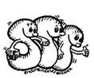

Seminár je ka�doroène rozdelenı na dve
èasti: zimnú a letnú. Ka�dá èas� má tri série po 9 úloh, prièom 1. úloha
je urèená len pre prvákov a 2. a 3. úloha len pre prvákov a druhákov.
Zvyšnıch šes� úloh je pre všetkıch. Za ka�dú úlohu mô�ete získa� 0 a�
9 bodov, prièom do poradia sa zapoèítava 5 najlepšie obodovanıch úloh
v ka�dej sérii (teda prvákom staèí spoèíta� 5 úloh z deviatich, druhákom
5 z 8 a ostatnım 5 zo 6 majú šancu na plnı poèet bodov). Ka�dú vyriešenú
úlohu je nutné zasla� na osobitnom papieri formátu A4, na ktorom musí
by� uvedené meno a priezvisko, trieda a èíslo úlohy. Ak je riešenie na
viacerıch listoch, treba ich zopnú�. Riešenia pomocou poèítaèa nie su
prípustné. Spolu s prvou sériou treba zasla� prihlášku, ktorá je uvedená
v zadaniach s 1. sériou správne a úplne vyplnenú (platí pre všetkıch riešite¾ov!!!).
V prihláške si mô�ete zvoli� prezıvku, pod ktorou budete uvedení v poradiach.
Ak chcete rieši� SKMS, opútajte sa na zadania vášho profesora/rku matematiky.
Ak na vašu školu nedošli napíšte mail Pe�ovi
Novotnému.
|
|

|